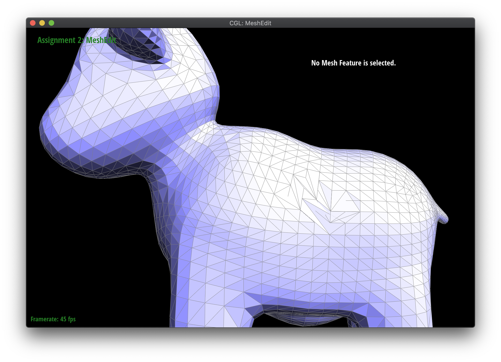

Overview

In Project 2, we learned to create polygon meshes starting with the basics of Bezier Curves and advancing to the sampling of 3D models. We mainly referenced lectures 7-8.
Section I: Bezier Curves and Surfaces
Part 1: Bezier curves with 1D de Casteljau subdivision
De Casteljau's algorithm is a recursive method used to create smooth, continuous polynomial curves through linear interpolation. To begin, the algorithm starts by linearly interpolating with parameter t to find the points between each of the line segments created by the control points. We continue this process recursively until there is only one point remaining between two points from the iteration before.
Another way to imagine this is as the movement between two points using vectors.
To find the vector between our first point, P0, and second point, P1, we simply linearly interpolate using
P0 + t*(P1-P0) which is also seen as: (1-t)*P0 + t*P1. In more formal terms, this is written out as:
In this simple 1D implementation, we updated the "evaluateStep()" function to iterate points.size()-1 points, so we could stay in-bounds while accessing point P and the next point P+1. Using these points, we linearly interpolate between P and P+1, returning a vector of all the resulting points. Since we evaluate at 1D, the points are interpolated into points.size()-1 points, until it reaches one point. Connecting the anchor points and final interpolated point together, we form a Bezier curve.
|
|
|
|
|
|
|
|
|
|
|
|
Part 2: Bezier surfaces with separable 1D de Casteljau subdivision
De Casteljau's algorithm results in parametric curves called Bezier curves.
Bezier surfaces are just an extension of the concept of curves, since a Bezier patch has 4x4 control points, which we interpret as 4 Bezier Curves, since each row of 4 control points define a Bezier curve parametrized by u. We extend the reasoning for part 1 to use the recursive step and evaluate points on each of the curves parametrized by u. After that, we reuse the recursive step and parametrize over v. The result point is the final one.
Another way to view Bezier curves in 3d is as a cubic polynomial of t where p0, p1, p2, and p3 represent our control point and pn(t) represents the point we want:
pn(t) = p0(1-t)3+p13t(1-t)2+p23t2(1-t)+p3t3Section II: Sampling
Part 3: Average normals for half-edge meshes
Area-weighted vertex normals are a way to help improving shading in 3D models. Rather than flat triangle normals, area-weighted vertex normals help improve shading by altering vertex normals to be orthogonal to the overall larger, flat polygons.
For the implementation of the area-weighted normals, we implemented a function to compute the weighted average unit vector through the area-weighted average of the normals of neighboring triangles. Using the halfedge data structure, we can access the values of all the verticies and edges for each face through twin(), next(), and vertex(). To begin, we retrieved the vertex data. Iterating over the vertex->twin() until we reached the original vertex, we summed the areas of each face. With our normalized weighted value,
Compute face normal using the area, so it takes into account the weighted average of the areas. We iterate over the twin()s and next()s to find the normals across the mesh
|
|
|
Part 4: Half-edge flip
One useful way to modify meshes is to alter the direction of an edge by flipping them. This can result in help more uniformity when creating subdivisions, upsampling, or adding in edge loops.
To implement our half-edge flip feature, we focused on the process in which an edge flip was made by flipping the interior of the two triangles. Edge flip flips the edge passed in and returns an iterator to the flipped edge. First we check if the edge is a boundary using the isBoundary() method, and if it is, we return immediately. The rest of the function mainly involves fetching all the edges, vertices, and half edges.
We used the below diagram of a reference of how the triangles look before the flip to get edges e1-e4, half-edges h1-h9, and vertices v0-3:
and this image as a reference for reassigning pointers after the edge flip. As an example, we reassign h0's vertex to be v3. Although some pointers don't change, for example, h1's next remains h2, as does a number of the next pointers, but we decide to "reassign" them as a sanity check anyway, because it's easier to keep track of all the pointers rather than just a few
We use the setNeighbors function to change some of the pointers for neighors to halfedges, and also reassign the halfedges associated with affected vertices, edges, and faces. Thankfully, we didn't have to debug after running. During the process of coding though, we messed up a few times on pointer assigns and reassigns, because there's so many it's easy to lose track of them. But we checked the login and reran through the diagram and were able to get it to work!
|
|

|
Part 5: Half-edge split
Similar to flipping edges, we can split edges. For this operation, we first calculate the midpoint of the edge we want to split. From there, we reassign or create 3-4 new edges accordingly to represent the edge being divided into smaller edges.
As with the last method, we retrieve all the edge, vertex, and half edge pointers -- this includes half edges h0 - h9, vertices v0 - v3, edges e1-e4, and faces f0-f1 following the diagram from the previous part. But since we’re splitting an edge now we also have to create new edges – 3 of them (e5 - e7), as per our diagrams below. Since we have 3 new edges, we need 2 new halfedges for each, which means 6 total new halfedges that we created, ie h10 through h15. Before reassigning pointers, we also calculate the midpoint position on which we split, by setting v4 to a newVertex() and assigning its position to be the midpoint between v0 and v1. Then we switch around our pointers for halfedge neighbors, and vertex and edge halfedges, utilizing the setNeighbors method. For example, we use setNeighbors to set h1's next to h10, one of the halfedges on the new e6. Similarly, we set the new e6's half edge to h10. We repeat similar processes with the other new edges and halfedges. In addition, since we created 2 new triangles within the triangle mesh, we need to make new faces, f2 and f3. We create those with newFace() and assign the respective halfedges (eg f2.halfEdge() = h1).
Fortunately, we didn’t have to debug much – while coding there were some accidental switching of pointers and inconsistencies but they were fixed before running!
An additional feature that is possible is splitting on a "boundary edge". However, we didn't implement this feature at this time.
|
|
|
|
|
|
Part 6: Loop subdivision for mesh upsampling
In this part we did loop division, in which you upsample to create a higher-resolution image. To implement the function, we started by looping over the vertices with mesh.verticesBegin(). We make sure these vertices are labelled as original by setting isNew to false, since we will need to later distinguish between original and new vertices and everything should be consistent.
On each vertex we loop over its neighbors using the twin() and next() pointers and take the sum of their positions until we arrive back at the original vertex. We do this with a do-while loop. Then, we use this sum to compute new positions for each of the old vertices. The weight we give the original position in our computation for the new one depends on the degree. So, we check the degree attribute and use the formula for the new position as (1 - n * u) * original position + u * neighborSum where n is the degree, u is 3/16 if n=3 or 3/(8n) otherwise.
Then we loop over the original edges using mesh.edgesBegin and mesh.edgesEnd as start and end conditions. Within this loop we also want to make sure these edges' isNew is set to false, like we did with the vertices. The position of a new vertex splitting the shared edge (A, B) between a pair of triangles (A,C,B) and (A,B,D) is 3/8 * (A + B) + 1/8 *(C+D) as per the spec, so we use the halfedge pointers to fetch A,B,C, and D. After that we use the aforementioned formula and store it within the edge's newPosition variable.
With that done, on we again loop over the edges to split them. We get the 2 vertices on the edge and make sure that the edge and its vertices are part of the original mesh. If they are, we split the edge by calling splitEdge and set the new vertex's position based on the edge's new position after having been split. Now, the next part of the loop subdivision is to flip any new edge that connects an old and new vertex. So we again loop over the edges, get the two vertices on them, check that the edge is new and exactly one of its vertices were in the original mesh. If they were, then we flip the edge and change the edge isNew attribute to false. Finally we loop again over the vertices to copy the new vertex positions into their respective attributes.

|

|
|
|
|
Debugging Techniques
During this task, we faced a few obstacles with looping over our mesh to get the neighbor sums and understanding how to set position iteratively:
- When summing up neighbor positions, we were referencing pointers incorrectly. For example, when iterating over the neighboring edges from our starting vertex, we were This resulted in a segfault. To fix this what helped was drawing a diagram and walking through the steps of getting neighboring vertices. The Clion debugger also helped, along with some Piazza followups that guided us in the right direction
- Ensure all (original and new) verticies are being set to their "new position"
- When dealing with infinite loops, we walked through our implementation again conceptually and manually checking addresses.
- When flipping edges, we forgot to set flipped edge that were new to false after flipping. We also had the wrong conditional for checking if we can flip the edge -- instead of checking that exactly one of the vertices was part of the original mesh, we checked that at least one of them was. After rereading the comments and the spec, we realized our mistake and fixed it.
Why Subdivide? + Impacts of Subdivision
Similar to how jaggies are resolved using supersampling, by adding more subdivisions into the mesh in upsampling, the mesh smoothens out and blends the mesh more uniformly. As more cells are added into the mesh, the mesh is refined. However, it causes more calculations and load time as the mesh becomes high poly.
|
|
|
|
|
|
Section III: Optional Extra Credit
If you are not participating in the optional mesh competition, don't worry about this section!
Part 7: Design your own mesh!
didn't get to it :(
Additional Information
You can view our website at: https://ashchu.github.io/cs184project2